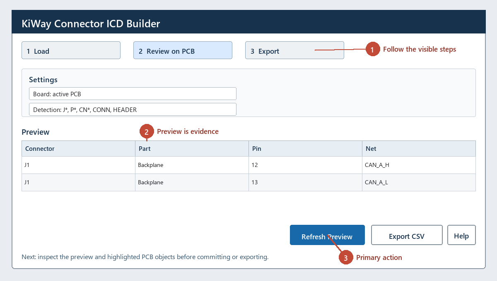

KiWay Connector ICD Builder
Annotated interface walkthrough
The numbered cues below match the visible workflow in the plugin. A preview is the review evidence; committing or exporting is the final step.

Creates a connector pin/net table from the open PCB for ICD and harness review.
Cross-selection: double-click a connector-pin row or click Select on PCB to select its exact pad in PCB Editor.
Workflow
- Open the target PCB and launch the plugin.
- Refresh after updating from the schematic.
- Review detected
J*, P*, CN*, CONN, or HEADER footprints. - Cross-select critical pins and export CSV for controlled review.
Columns
| Connector | Part | Pin | Net | Type |
|---|
| Footprint reference | Footprint value | Pad number | Assigned PCB net | KiCad pad attribute |
Troubleshooting
- Missing connector: use a conventional reference or include
CONN/HEADER in its value. - Blank net: update the PCB from the schematic and inspect the selected pad.
- Wrong classification: the CSV is a review artifact; correct the footprint metadata before release.